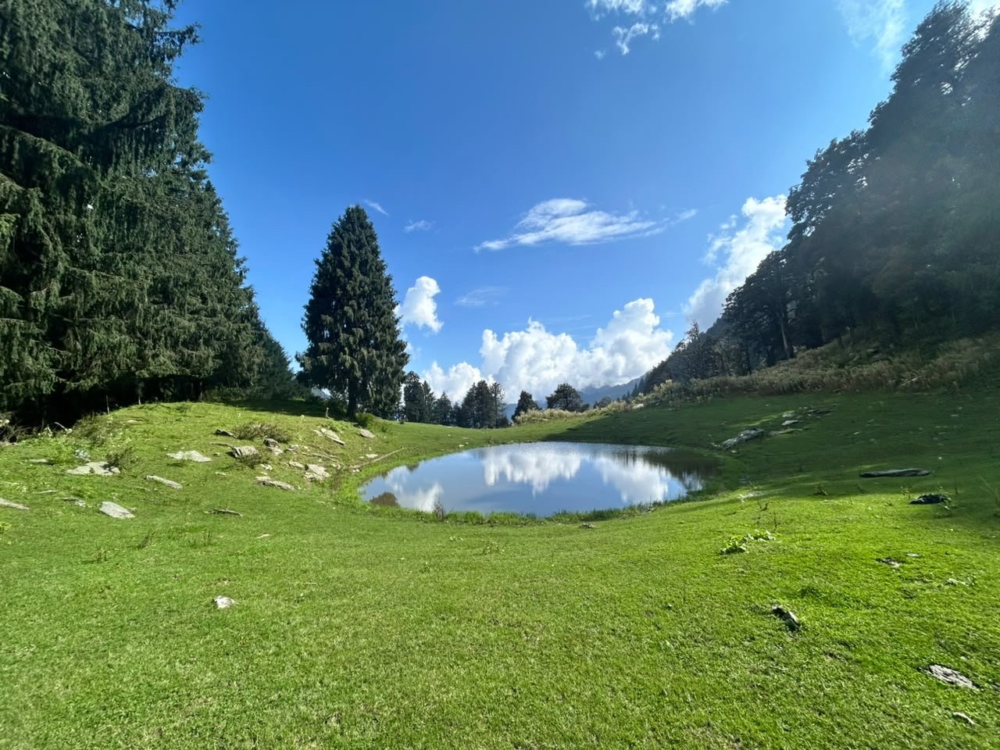
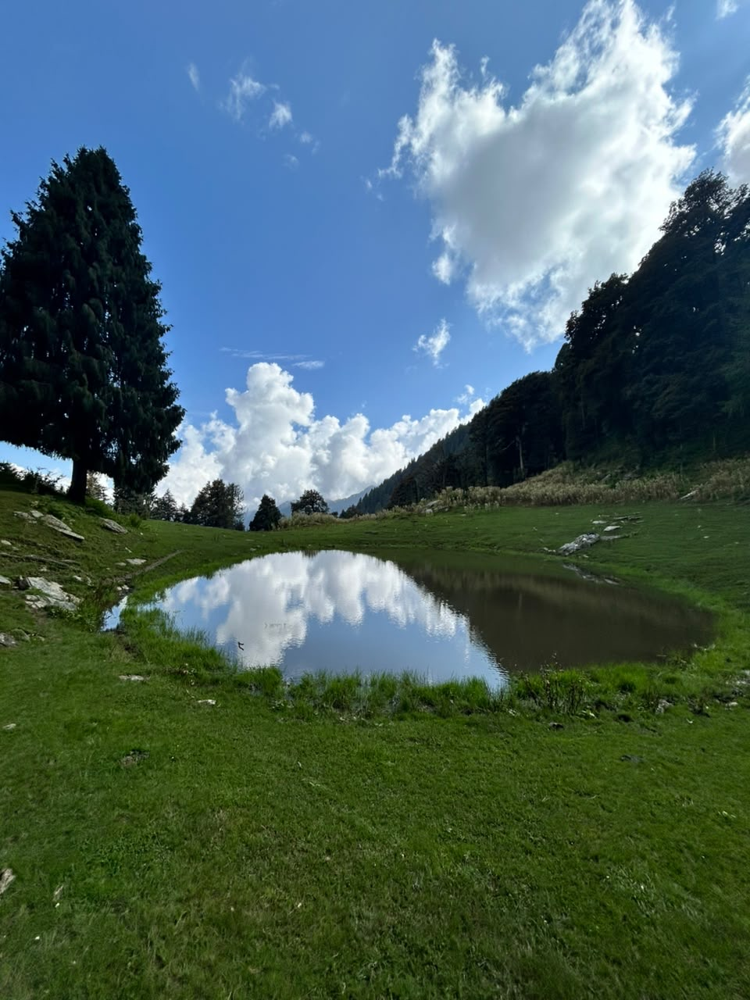
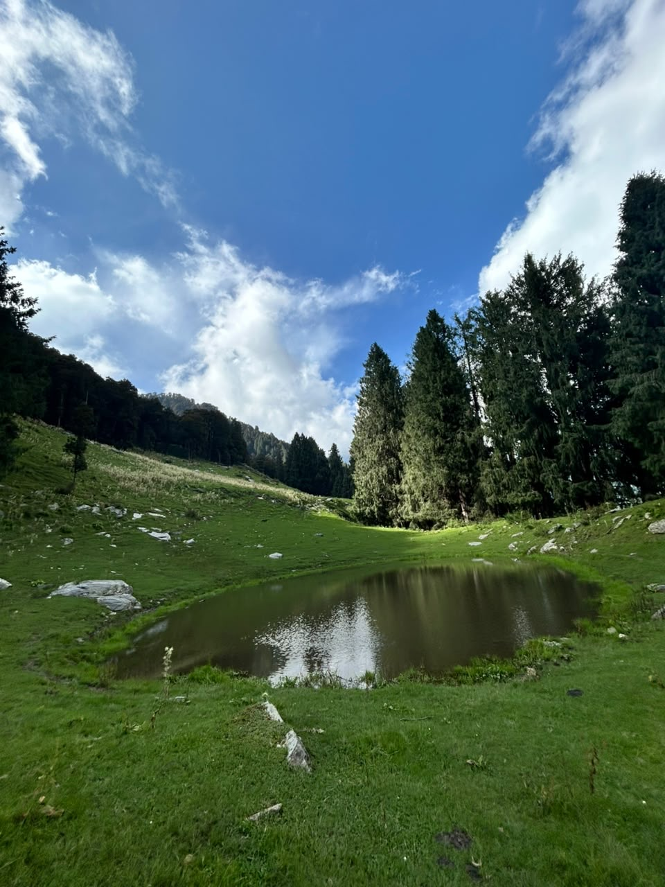

The walk
A small lake above the village
Mahantu Lake sits in the Dhauladhar Wildlife Sanctuary, a little above Rajgundha. The meadow around it is open grass and old trees. On a still day the water holds the sky.
It is a day out, and it is not a march. You go, you sit, you eat, and you come home. Tell us the night before. We will pack lunch from the kitchen and point you onto the trail. If you would rather not go alone, say so — we will see who can walk with you.
-
Morning
Leave the house after breakfast. We will show you where the trail leaves the village.
-
By the water
Rest on the grass. Eat the lunch we packed. There is no need to turn around the moment you arrive.
-
Evening
You are back in the village before night. Dinner is at the house, the way it always is.


